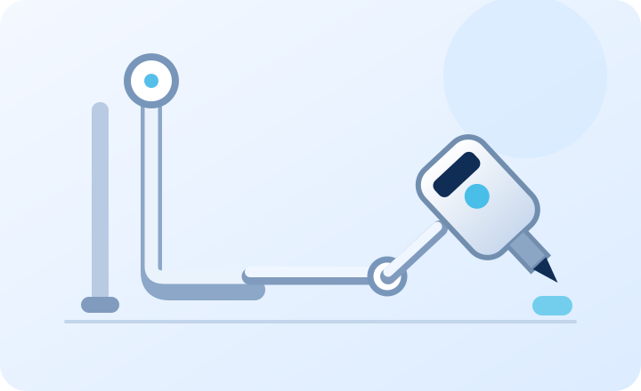
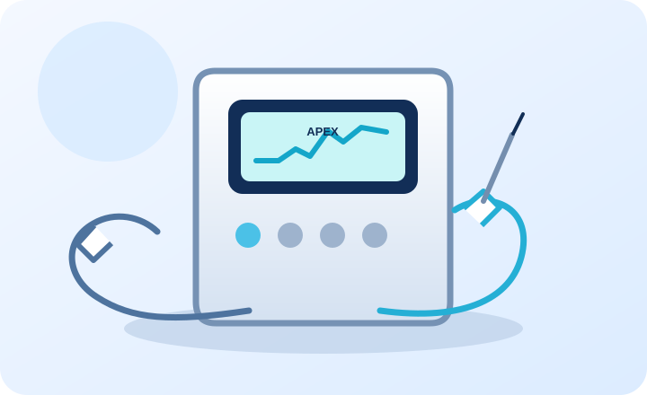
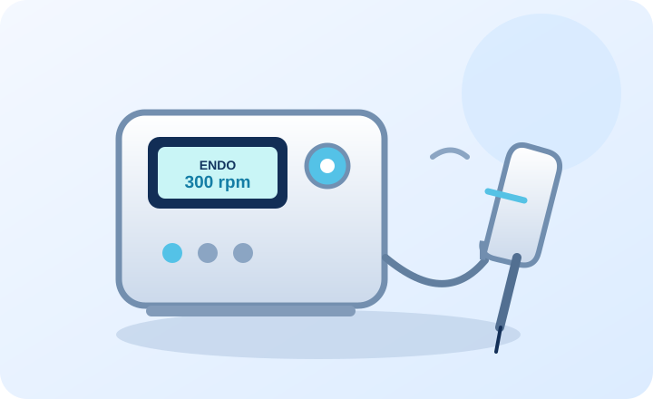
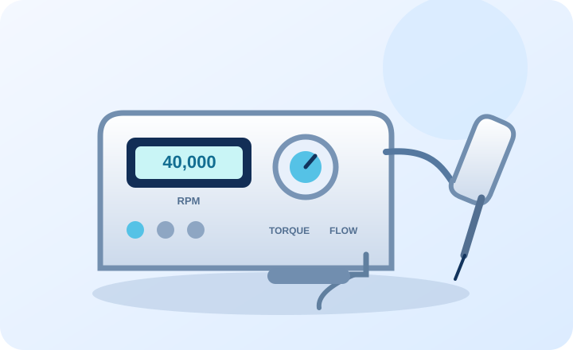
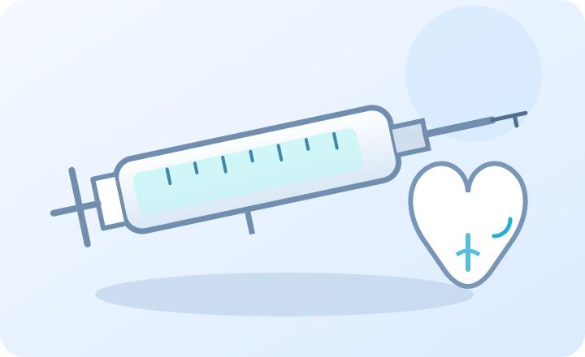
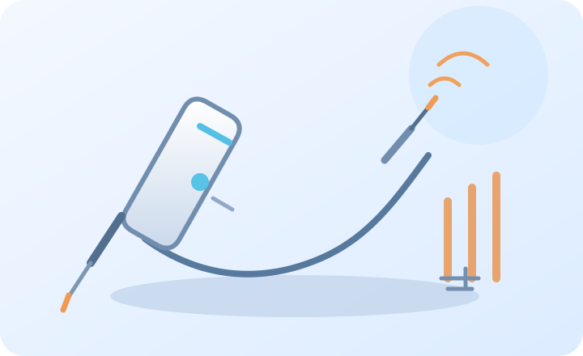

CLINIC TECHNOLOGY
Modern tools. Clearer diagnosis. More controlled treatment.
Technology supports Dr Neeilratan Chauhan’s clinical judgement and helps patients understand their treatment more clearly.

TECHNOLOGY 01
RVG Digital X-Ray
Fast digital dental imaging that helps the doctor examine tooth roots, bone levels, and hidden areas.
RVG sensors create an image on-screen within seconds. The image can be enlarged and reviewed during diagnosis, treatment planning, and follow-up comparisons.
How it supports care
- Detecting decay between teeth
- Reviewing tooth roots and supporting bone
- Planning RCT, crowns, bridges, and implants
- Digital storage for future comparison

TECHNOLOGY 02
Apex Locator
An electronic device used during root canal treatment to estimate working length accurately.
The Apex Locator helps identify the end point of the root canal system, supporting controlled cleaning and filling while reducing reliance on guesswork.
How it supports care
- Working-length measurement in RCT
- Supports conservative canal preparation
- Helps improve procedural control
- Used with clinical and radiographic checks

TECHNOLOGY 03
Endomotor
A controlled rotary instrument that assists in efficient shaping and cleaning of root canals.
The Endomotor drives specialised endodontic files at controlled speed and torque. It helps the dentist shape canals consistently while adapting technique to the tooth anatomy.
How it supports care
- Rotary canal shaping
- Controlled speed and torque
- Efficient endodontic workflow
- Supports predictable RCT preparation

TECHNOLOGY 04
Physiodispenser
A surgical motor system used for controlled implant preparation and placement.
A Physiodispenser provides regulated speed, torque, and irrigation during implant procedures. It supports careful preparation according to the selected implant plan.
How it supports care
- Implant site preparation
- Controlled torque and speed
- Irrigation during surgical drilling
- Supports implantology workflows
TECHNOLOGY 05
Intraoral Camera
A small camera that displays close-up views from inside the mouth for clearer communication.
The camera helps patients see areas that are difficult to view in a mirror. Images can support explanation of decay, cracks, gum concerns, restorations, and treatment progress.
How it supports care
- Patient-friendly visual explanation
- Close-up documentation
- Reviewing restorations and gum areas
- Before-and-after comparison

TECHNOLOGY 06
Endo irrigator
A syringe-and-needle system used to deliver irrigating solution during root canal treatment.
Irrigation helps flush the prepared canal during treatment. The dentist selects an appropriate solution and technique for the tooth and clinical situation.
How it supports care
- Delivers irrigant into the prepared canal
- Helps flush debris during root canal treatment
- Used with a controlled clinical technique

TECHNOLOGY 07
G.P cutter
A heated instrument used to cut and manage gutta-percha during root canal filling.
The G.P cutter helps the dentist trim gutta-percha to the planned level during obturation. Its use is guided by the treatment plan and clinical assessment.
How it supports care
- Trims gutta-percha during canal filling
- Supports controlled obturation workflow
- Used as part of root canal treatment